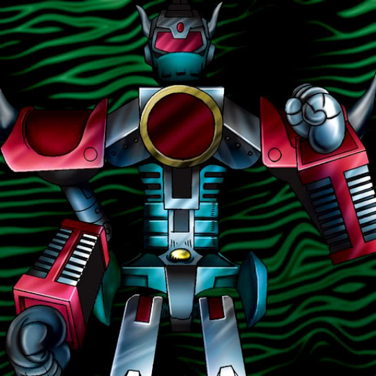

Machine King

Description: "When this card is flipped face-up, this card is strengthened by 100 points for every MACHINE monster on the field."
STATS
ATK: 2200
DEF: 2000
DECK COST
Deck Cost per Card: 47
EFFECT NOT IMPLEMENTED